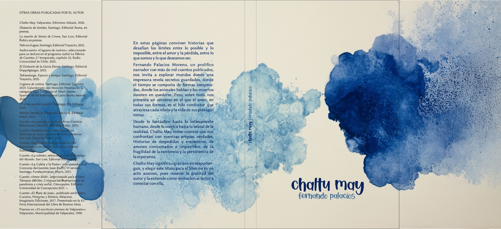
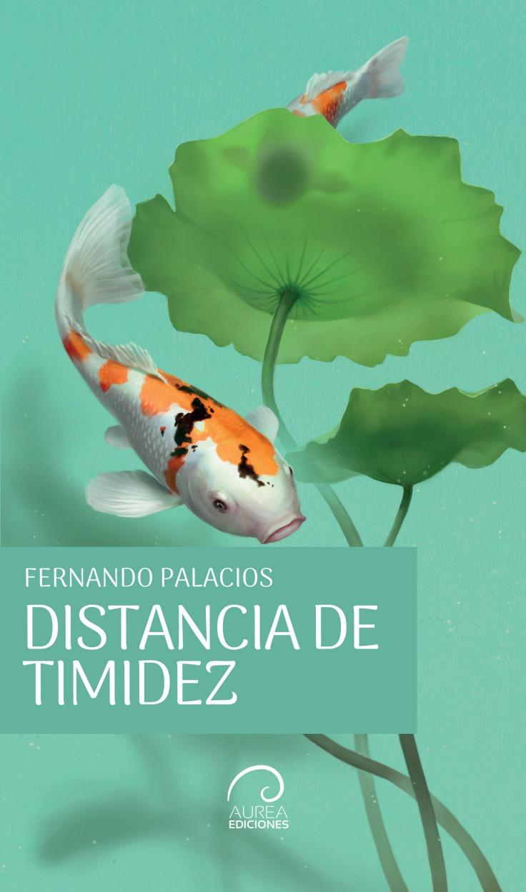
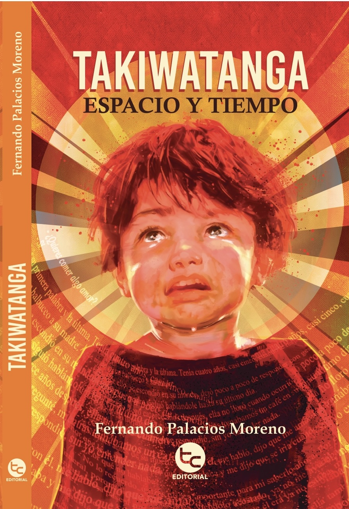
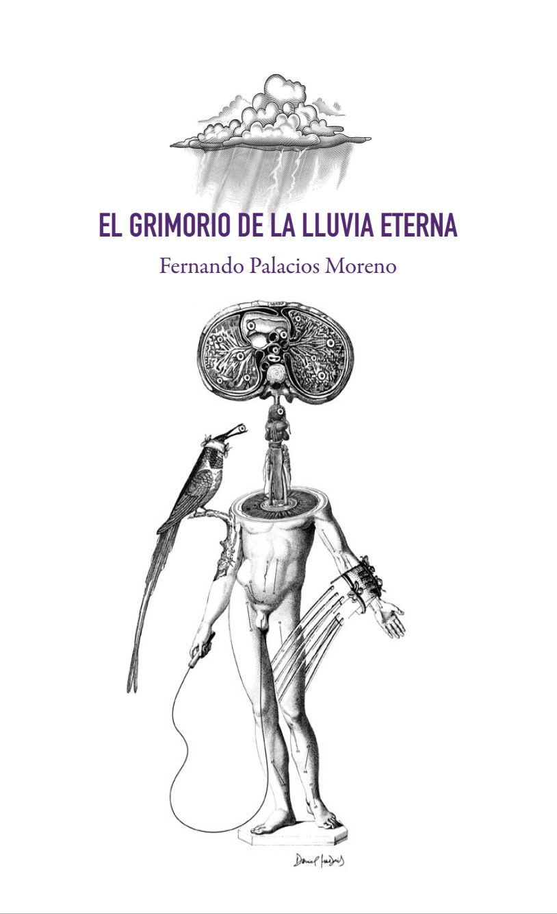
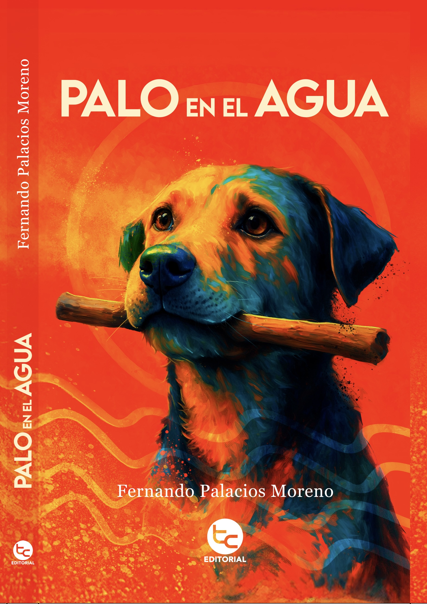
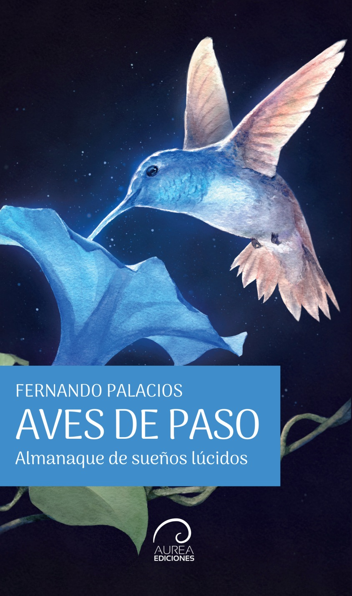
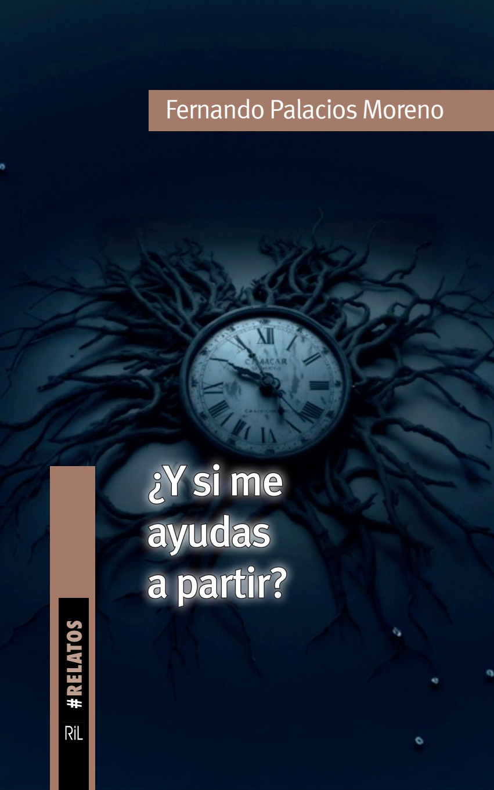
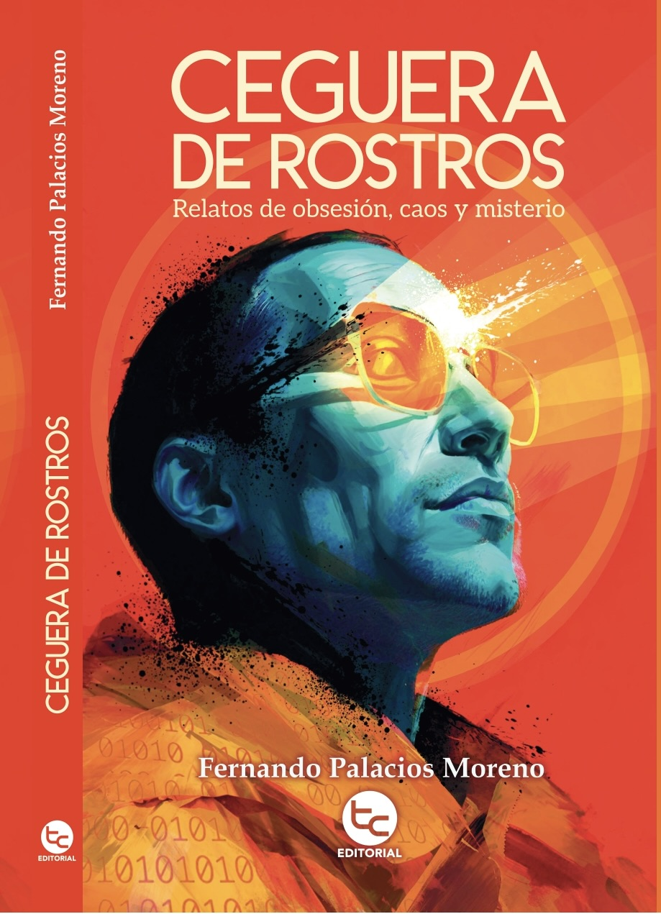
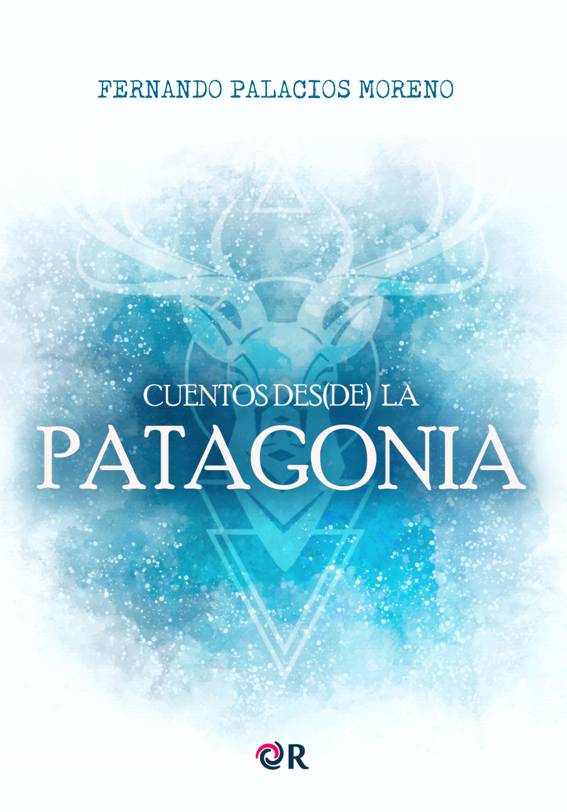

Chaltu may
Ediciones Askasis
9 libros publicados desde el año 2023.
Cinco nuevas obras en prensa.
2023 — 2026
De las publicaciones más recientes a las primeras.

Ediciones Askasis

Áurea Ediciones

Editorial Trayecto

Editorial Doopelgänger

Editorial Trayecto

Áurea Ediciones

RIL editores

Editorial Trayecto

Editorial Rubin
Cinco libros por publicar.
Estado a octubre de 2026.
Editorial Rubin
Editorial Trayecto
Mago Editores
Áurea Ediciones
Ediciones Askasis
Recuento de cuentos distintos entre sí,
a octubre de 2026.